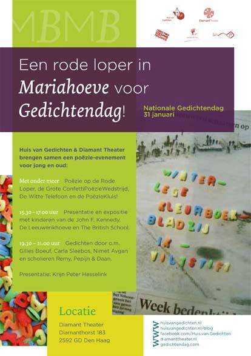

In navolging van het geslaagde Wijkenfestival Nationale Gedichtendag 2012 presenteren Huis van Gedichten en het Diamant Theater donderdag 31 januari wederom een poëzie-evenement.
Met onder meer Poëzie op de Rode Loper, de Grote ConfettiPoëzieWedstrijd, De Witte Telefoon en de PoëzieKluis! De witte telefoon (poëziefoon) en de poëziekluis zijn door de Mechanische Aap gemaakt.
